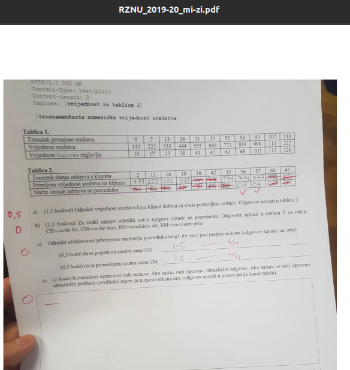

pushPop Rekao sam ne, tj. može se poboljšati boljom predikcijom Expires vrijednosti. Po meni se RM nikad ne bi trebao dogoditi, sustav je preoptimističan.
Fulaš pod a), fulo si ⅓ ispita

evo od prosle godine doslovno isti zadatak kao danas, s materijala je file
well fuk
možda sam trebao riješiti i poneki zadatak 😂
Jel profesor rekao nes korisno u vezi labosa jucer na predavanju?
jel ove linkove na kraju prezentacija koje je napravio Klemo mozemo smatrati kao materijalima za pripremu za ispit ili ima neka druga literatura?
Skaxen Na kraju predavanja (zadnjih 10-15 minuta) govori što treba pročitati, samo nisam sigurna je li to za sve linkove ili samo za link kod Thrifta.
Predavanje 23.12 nije snimano ili nešto krivo gledam?
DaL Nope, nije bilo snimano
piše li se u završnom cijela godina ili samo drugi ciklus?
Jim Prof je rekao kompletno gradivo s naglaskom na drugi ciklus
Jel zna netko hoće li objaviti predavanje od prošlog tjedna na teams, čini mi se da je bilo snimano
hobotnica jos uvijek ti je dostupno da si ga skines iz chata predavanja
Postoje li negdje završni od prethodnih 2,3 godine?
Jel mi se cini ili fali snimka predavanja mikroservisa?
DostDobroIme Jep, nije se snimalo.
Je li prag za kontinuiranu nastavu 20/40 iz labosa i 30/60 iz oba ispita, ili svaki ispit jos ima zasebno 50% prag a da mi je to negdje promaklo?
peaceko ukupno 50% iz ispita
Postoje li igdje neki zadaci koji dolaze u završnom, ili teorija, anything ? Ne mogu naći u materijalima baš :/
toblerone Imas u pdf-u od mi 2019-20 samo scrollaj malo dolje